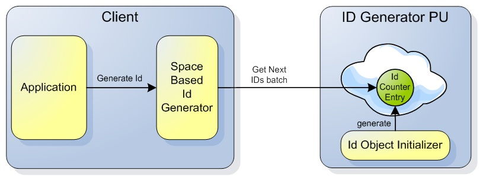

| Author | Product Version | Reference | Download |
|---|---|---|---|
| Shay Hassidim | 7.1 |
When writing objects into the space, you may need to generate a global unique ID for your space objects. The ID will be used later to fetch the object based on its ID via the readById/readByIds methods, or associate it with another object by placing the object ID as a field value within another object.
GigaSpaces generates a unique global ID when writing new objects using its built-in internal ID generator utility used when enabling the auto-generate ID property. Still, you may want to have your own custom global unique ID generator.
You can download the custom Unique Global ID Generator source code used with this example.
The following example includes a custom global unique ID generator PU and a client side utility. The Unique Global ID Generator features the following:
IdCounterEntry).IdCounterEntry object within a database. This allows the IdCounterEntry object to be loaded from a database in case the Unique Global ID Generator PU is fully re-started.IdObjectInitializer is created and generates the IdCounterEntry object within the Unique Global ID Generator space. Only one IdCounterEntry will be created.
To use the ID Generator you should:
SpaceBasedIdGenerator Bean. You should have it with every application instance.SpaceBasedIdGenerator idGenerator;
Integer myNextID = idGenerator.generateId();
The SpaceBasedIdGenerator using Spring Transactions to update the IdCounterEntry object.
The following should be used to enable the ID Generator:
This is ID Generator pu.xml:
<?xml version="1.0" encoding="UTF-8"?>
<beans xmlns="http://www.springframework.org/schema/beans"
xmlns:xsi="http://www.w3.org/2001/XMLSchema-instance"
xmlns:context="http://www.springframework.org/schema/context"
xmlns:os-core="http://www.openspaces.org/schema/core"
xmlns:os-events="http://www.openspaces.org/schema/events"
xmlns:os-sla="http://www.openspaces.org/schema/sla"
xmlns:tx="http://www.springframework.org/schema/tx"
xmlns:os-remoting="http://www.openspaces.org/schema/remoting"
xsi:schemaLocation="http://www.springframework.org/schema/beans http://www.springframework.org/schema/beans/spring-beans.xsd
http://www.springframework.org/schema/context http://www.springframework.org/schema/context/spring-context.xsd
http://www.springframework.org/schema/tx http://www.springframework.org/schema/tx/spring-tx-2.0.xsd
http://www.openspaces.org/schema/core http://www.openspaces.org/schema/core/openspaces-core.xsd
http://www.openspaces.org/schema/events http://www.openspaces.org/schema/events/openspaces-events.xsd
http://www.openspaces.org/schema/remoting http://www.openspaces.org/schema/remoting/openspaces-remoting.xsd
http://www.openspaces.org/schema/sla http://www.openspaces.org/schema/sla/openspaces-sla.xsd">
<os-core:annotation-support />
<context:component-scan base-package="com.gigaspaces.idgenerator.pu" />
<os-core:giga-space-context/>
<os-core:embedded-space id="IDGeneratoSpace" name="IDGeneratorSpace" />
<os-core:local-tx-manager id="transactionManager" space="IDGeneratoSpace" />
<tx:annotation-driven transaction-manager="transactionManager" />
<os-core:giga-space id="gigaSpace" space="IDGeneratoSpace" tx-manager="transactionManager" />
<!-- ========================================================================================================== -->
<bean id="IdObjectInitializer" class="com.gigaspaces.idgenerator.pu.IdObjectInitializer">
<property name="initialValue" value="100" />
<property name="idRange" value="1000" />
</bean>
<os-sla:sla number-of-instances="1" max-instances-per-vm="1">
</os-sla:sla>
</beans>
<?xml version="1.0" encoding="UTF-8"?>
<beans xmlns="http://www.springframework.org/schema/beans"
xmlns:xsi="http://www.w3.org/2001/XMLSchema-instance"
xmlns:context="http://www.springframework.org/schema/context"
xmlns:os-core="http://www.openspaces.org/schema/core"
xmlns:os-events="http://www.openspaces.org/schema/events"
xmlns:os-sla="http://www.openspaces.org/schema/sla"
xmlns:tx="http://www.springframework.org/schema/tx"
xmlns:os-remoting="http://www.openspaces.org/schema/remoting"
xsi:schemaLocation="http://www.springframework.org/schema/beans http://www.springframework.org/schema/beans/spring-beans.xsd
http://www.springframework.org/schema/context http://www.springframework.org/schema/context/spring-context.xsd
http://www.springframework.org/schema/tx http://www.springframework.org/schema/tx/spring-txxsd
http://www.openspaces.org/schema/core http://www.openspaces.org/schema/core/openspaces-core.xsd
http://www.openspaces.org/schema/events http://www.openspaces.org/schema/events/openspaces-events.xsd
http://www.openspaces.org/schema/remoting http://www.openspaces.org/schema/remoting/openspaces-remoting.xsd
http://www.openspaces.org/schema/sla http://www.openspaces.org/schema/sla/openspaces-sla.xsd">
<os-core:annotation-support />
<context:component-scan base-package="com.gigaspaces.idgenerator.pu" />
<os-core:giga-space-context/>
<os-core:embedded-space id="IDGeneratoSpace" name="IDGeneratorSpace" />
<os-core:local-tx-manager id="transactionManager" space="IDGeneratoSpace" />
<tx:annotation-driven transaction-manager="transactionManager" />
<os-core:giga-space id="gigaSpace" space="IDGeneratoSpace" tx-manager="transactionManager" />
<!-- ========================================================================================================== -->
<bean id="IdObjectInitializer" class="com.gigaspaces.idgenerator.pu.IdObjectInitializer">
<property name="initialValue" value="100" />
<property name="idRange" value="1000" />
</bean>
<os-sla:sla number-of-instances="1" max-instances-per-vm="1">
</os-sla:sla>
</beans>
The following should be added to your PU pu.xml used to deploy the client application:
<context:component-scan base-package="com.gigaspaces.idgenerator.client" />
<os-core:giga-space-context/>
<os-core:space-proxy id="IDGeneratoSpace" name="IDGeneratorSpace" />
<os-core:local-tx-manager id="IDGeneratortransactionManager" space="IDGeneratoSpace" />
<tx:annotation-driven transaction-manager="IDGeneratortransactionManager" />
<os-core:giga-space id="IDGeneratogigaSpace" space="IDGeneratoSpace" tx-manager="IDGeneratortransactionManager" />
<tx:annotation-driven transaction-manager="IDGeneratortransactionManager"/>
<bean id="idGenerator" class="com.gigaspaces.idgenerator.client.SpaceBasedIdGenerator"/>